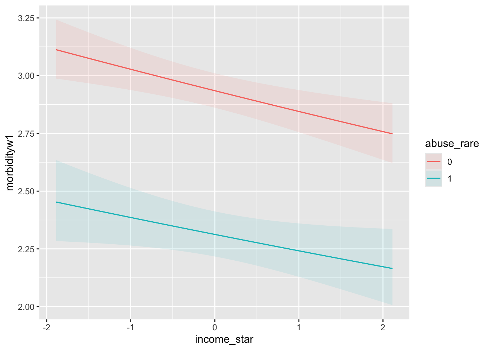

9.6 Difference Score Model
9.6.1 Calculating Difference Scores
Using the same repeated measures notation as above we can think about difference scores in the following way
\[ y_{2i} = y_{1i} + \Delta_{i} \]
where
- \(y_{1i}\) is the value of the outcome variable for individual \(i\) at time \(1\)
- \(y_{2i}\) is the value of the outcome variable for individual \(i\) at time \(2\)
- \(\Delta_i\) is the difference score for individual \(i\)
We can calculate the difference score as
\[ \Delta_{i} = y_{2i} - y_{1i}\] where \(\Delta_{i}\) is a score just like other scores (we can calculate its mean and covariance with other variables, etc.).
9.6.2 Comparison to Residualized Change
Remember when we talked about the residualize change model we showed the residual was equal to
\[ e_{i} = y_{2i} -\beta_1y_{1i} \]
For the autoregressive model, change is the function of a weighted combination of the scores.
In the difference score approach, we defined the difference scores as
\[ \Delta_{i} = y_{2i} - y_{1i}\]
What we see from this relationship is that raw change is residualized change when \(\beta_1 = 1\). We can see these concepts are intimately linked.
9.6.2.1 Difference Scores in WISC Data
For our empirical example we can write the difference score, or raw change in verbal ability, between Grades 1 and 6, as
\[ verbD_{i} = verb2_{i} - verb1_{i} \]
Furthermore, we can calculate the difference score in R as follows
#calculating difference score
wiscsub$verbD <- wiscsub$verb6-wiscsub$verb1
head(round(wiscsub,2))## id verb1 verb2 verb4 verb6 perfo1 perfo2 perfo4 perfo6 momed grad verbD
## 1 1 24.42 26.98 39.61 55.64 19.84 22.97 43.90 44.19 9.5 0 31.22
## 2 2 12.44 14.38 21.92 37.81 5.90 13.44 18.29 40.38 5.5 0 25.37
## 3 3 32.43 33.51 34.30 50.18 27.64 45.02 46.99 77.72 14.0 1 17.75
## 4 4 22.69 28.39 42.16 44.72 33.16 29.68 45.97 61.66 14.0 1 22.03
## 5 5 28.23 37.81 41.06 70.95 27.64 44.42 65.48 64.22 11.5 0 42.72
## 6 6 16.06 20.12 38.02 39.94 8.45 15.78 26.99 39.08 14.0 1 23.889.6.2.2 Difference Score Descriptives
Look at the descriptives with the difference score.
psych::describe(wiscsub[,c("verb1","verb6","verbD")])## vars n mean sd median trimmed mad min max range skew kurtosis
## verb1 1 204 19.59 5.81 19.34 19.50 5.41 3.33 35.15 31.82 0.13 -0.05
## verb6 2 204 43.75 10.67 42.55 43.46 11.30 17.35 72.59 55.24 0.24 -0.36
## verbD 3 204 24.16 8.15 23.91 23.85 8.09 4.62 50.88 46.26 0.38 0.14
## se
## verb1 0.41
## verb6 0.75
## verbD 0.57psych::corr.test(wiscsub[,c("verb1","verb6","verbD")])## Call:psych::corr.test(x = wiscsub[, c("verb1", "verb6", "verbD")])
## Correlation matrix
## verb1 verb6 verbD
## verb1 1.00 0.65 0.14
## verb6 0.65 1.00 0.84
## verbD 0.14 0.84 1.00
## Sample Size
## [1] 204
## Probability values (Entries above the diagonal are adjusted for multiple tests.)
## verb1 verb6 verbD
## verb1 0.00 0 0.04
## verb6 0.00 0 0.00
## verbD 0.04 0 0.00
##
## To see confidence intervals of the correlations, print with the short=FALSE optionOf particular interest in questions about intraindividual change is the relation between the pre-test score and the amount of intraindividual change. We can look at the bivariate association.
psych::pairs.panels(wiscsub[,c("verb1","verbD")])
A note on computing difference scores: always use raw scores when computing difference scores, Pre-standardizing variables discards important variance information.
9.6.3 A Difference Score Regression Model
For the purpose of comparison consider a linear model is expressed for \(i = 1\) to \(N\) as
\[ \Delta y_{i} = \beta_{0} + \beta_{1}y_{1i} + e_{i} \]
where we are looking at change in verbal test scores while controlling for grade 1 scores,
- \(\beta_0\) is an intercept parameter, the predicted score of \(\Delta y\) when \(y_{1i}=0\)
- \(\beta_1\) is a slope parameter indicating the difference in the predicted score of \(\Delta y\) based on a 1-unit difference in \(y_{1i}\)
- \(e_{i}\) is the residual score for individual \(i\)
#Difference score model
DIFfit <- lm(formula = verbD ~ 1 + verb1,
data=wiscsub,
na.action=na.exclude)
summary(DIFfit)##
## Call:
## lm(formula = verbD ~ 1 + verb1, data = wiscsub, na.action = na.exclude)
##
## Residuals:
## Min 1Q Median 3Q Max
## -20.2459 -5.8651 0.1781 4.9048 27.9976
##
## Coefficients:
## Estimate Std. Error t value Pr(>|t|)
## (Intercept) 20.22485 1.99608 10.132 <2e-16 ***
## verb1 0.20117 0.09773 2.058 0.0408 *
## ---
## Signif. codes: 0 '***' 0.001 '**' 0.01 '*' 0.05 '.' 0.1 ' ' 1
##
## Residual standard error: 8.087 on 202 degrees of freedom
## Multiple R-squared: 0.02054, Adjusted R-squared: 0.0157
## F-statistic: 4.237 on 1 and 202 DF, p-value: 0.04083The intercept term, \(\beta_{0} = 20.22\) is the expected value of the difference score (raw change in verbal ability), for an individual with a verbal ability score = 0 at the first occasion.
The slope term, \(\beta_{1} = 0.20\) indicates that for every 1-point difference in verbal ability at the first occasion, we expect a \(1.2\) point difference in the amount of intraindividual change.
The same methods as above can be used to plot the results of the difference score model.
termplot(DIFfit,se=TRUE,partial.resid=TRUE,
main="Difference-score Model",
xlab="Verbal Score at Time 1",
ylab="Difference in G1 and G6 Verbal Scores")We can also do something similar using ggplot.
#making interindividual regression plot
ggplot(data = wiscsub, aes(x = verb1, y = verbD)) +
geom_point() +
geom_smooth(method="lm", formula= y ~ 1 + x,
se=TRUE, fullrange=TRUE, color="red", size=2) +
xlab("Verbal Score at Grade 1") +
ylab("Difference Score") +
ggtitle("Difference Score Model") +
theme_classic()Note that each of these model results plots are regression plots: outcome on the y-axis, predictor on the x-axis.